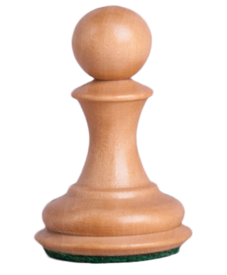
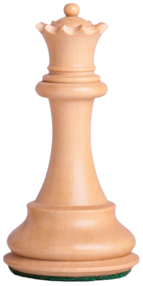
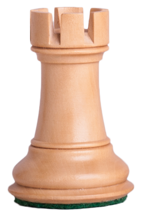
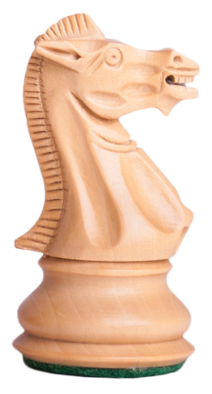
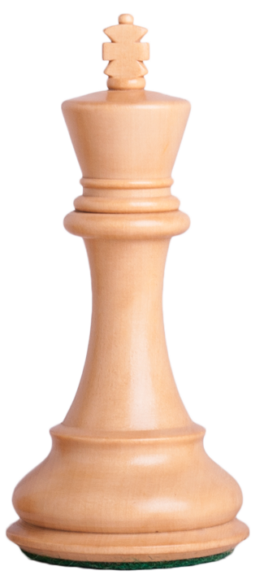

The pawn

The pawn is the most numerous and weakest chess piece. It moves one
square forward, two squares on its first move, and captures
diagonally. Pawns cannot move backward. When a pawn reaches the
opposite end of the board, it promotes to a queen, rook, bishop, or
knight. Pawns play a crucial role in controlling the center of the
board and attacking opponents.
The Queen

The queen is the most powerful piece in chess, combining the moves of
a rook and a bishop. It can move any number of squares in a straight
line, horizontally, vertically, or diagonally. Each player starts with
one queen, placed next to their king. Due to its strength, a pawn is
often promoted to a queen when it reaches the opposite end of the
board. The queen is crucial for attacking, defending, and controlling
the board.
The Rook

The rook is a powerful chess piece that moves in a straight line,
either horizontally or vertically, as far as it wants until it reaches
the edge of the board or is blocked by another piece. It can capture
any enemy piece it lands on. Rooks are particularly strong in open
positions where they can control long files and ranks. They are often
used in conjunction with the queen to create powerful attacks. In the
endgame, rooks become even more valuable as they can easily coordinate
with pawns to deliver checkmate.
The Kight

The knight is a unique chess piece that moves in an "L" shape. It
moves two squares in one direction and then one square in a
perpendicular direction. This allows it to jump over other pieces,
making it a versatile and powerful piece. Knights are often used to
control the center of the board and to attack opponents' pieces from
unexpected angles. They are also valuable for their ability to fork
opponents' pieces, which means attacking two pieces at once.
The Bishop

The bishop is a chess piece that moves diagonally. Each player starts
with two bishops, one on a light square and one on a dark square.
Bishops can move any number of squares along a diagonal, but they
cannot jump over other pieces. They are valuable pieces that can
control many squares on the board, especially in open positions.
Bishops are often considered to be more powerful than knights, but
they are less valuable than rooks or queens.
The King

The king is the most important piece in chess. It moves one square in
any direction (horizontally, vertically, or diagonally). The goal of
the game is to checkmate the opponent's king, meaning it's under
attack and cannot escape. A king in check must be defended
immediately. Castling is a special move where the king and a rook move
together for protection. The endgame often revolves around king
activity, as it becomes a powerful piece in maneuvering pawns and
capturing pieces.